The general map tools are available on the map in both the main map and the map displayed alongside the Property or Street forms e.g.
You may Zoom In and Out using either the Zoom In / Out tools at the bottom left of the map or by using the scroll bar on your mouse. To move / pan the map use your left mouse button and drag the map to a different location. As you zoom in and out you will notice that the map scale changes e.g. 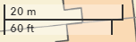 |
The Layer control or Show / Hide layer tool is found on the Map toolbar
You may control which layers you see on the map by switching a layer off or on. Just click on the Layer in the Layer control to toggle the view and the Show / Hide eye icon (displayed in red in the above image) will change accordingly. For all of the layers, apart from the Base mapping, you may also click on the layer Options e.g. 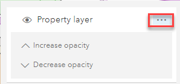 Here you may increase or decrease the opacity for the selected layer. |
You may wish to display one of your own map layers in the Map pane of iManage Cloud. This can be useful if you have existing geometry that you wish to use for creating new streets (ESUs) or maybe polygons for provenance extents. Currently this is limited to uploading Esri Shape files. First you need to add all the files that make up your Shape file (e.g. .dbf, .prj, .shp & .shx) to a Compressed zip folder. Once you have the files in a Compress zip folder you can now upload your file. •Select the Upload shp file tool on the toolbar e.g. •Click the Choose File button to pick your compressed zip folder. •Enter a Title for your map layer. The Map id is automatically populated with the file name. •The rest of the details are not mandatory so, if you wish to display copyright information you can enter it here. •Now decide if you want the layer to be added to the map Layer Control and the Scale range the minimum scale (most zoomed out) and maximum scale (most zoomed in) at which the layer is visible in the Map pane. •You can also select the various different snapping options i.e. if your layer contains polylines then you may wish to switch on ESU snap to layer and if it contains polygons then Extent snap to layer. •Once you are happy with your options click Upload and the layer is uploaded to the map. |
If you wish to measure the distance from A to B then select the Measure tool . Click on the map where you wish to start measuring from, then click wherever you wish to change direction and then double click when you wish to stop measuring. You can then change the units by selecting from the Unit drop down list, or start a new measurement. 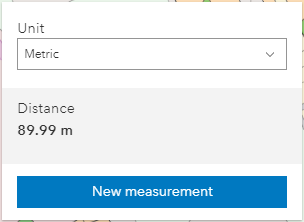 To close the Measure control just click the icon on the toolbar again. |
To select the properties from the map first click the Select properties tool to the right of the Search e.g. 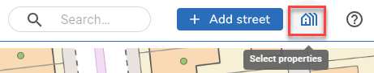 You will then see a new tool bar with the different tools for selecting properties from the map e.g. 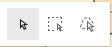 The first lets you select an individual feature, the second lets you draw a rectangle and the third lets you draw a lasso to select the properties. Once you have made a selection you will see this dialog: 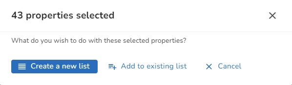 If you select Create a new list the selected properties will be displayed in the Explorer replacing any properties previously displayed there; if you select Add to existing list then the selected properties will be added to the existing list in the Explorer. Clicking Cancel will cancel your property selection. |
If you click on a single property centroid on the map an information box is displayed showing the details of the selected object e.g. 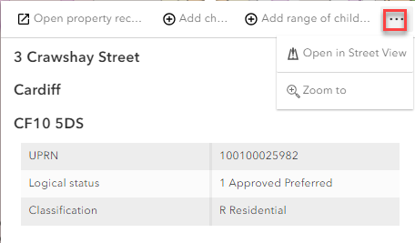 Along the top or bottom of the dialog (placement depends on where on the map you clicked) you may select to open the property record, add a child or children or select the ... Actions menu to display other actions (highlighted in red above). If you click on a multiple property centroid then a different dialog is displayed e.g. 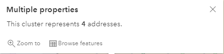 Here you have the choice to Zoom to the location on the map or Browse the features of the addresses. If you click Browse features the individual addresses are displayed: 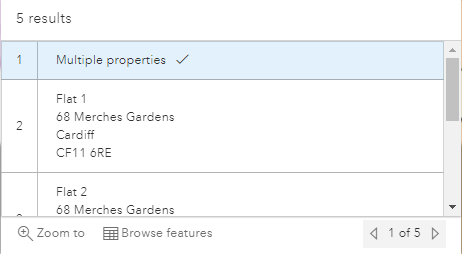 Use the scroll bar to scroll up and down the list of properties or the arrows at the bottom left to display each of the property details in turn. |
If you click on a street or ESU on the map an information box is displayed showing the details of the selected object e.g. 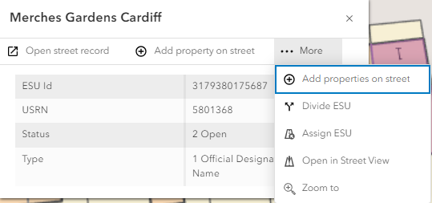 Along the top or bottom of the dialog (placement depends on where on the map you clicked) you may select to open the street record, add a property or properties or select the ... Actions menu to display other actions (highlighted in red above). |
The default for this tool is Live mode so, if you move the mouse over the map the displayed coordinates will change. 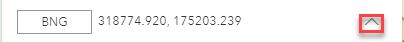 Clicking on the up arrow, outlined in red in the above image, displays more functionality e.g. 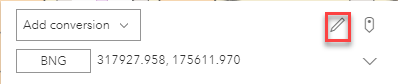 The pencil icon (outlined in red above) allows you to input comma separated X and Y coordinates and then tick the Go to location box and click Convert to zoom to the location. 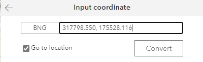
The default is to display the coordinates in BNG (British National Grid) but you may also display the Long/Lat by clicking on BNG e.g. 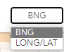 Selecting LONG/LAT displays the coordinates as LONG/LAT entry. You may use the Copy tool (outlined in red below) to copy either of the entries just hover over the entry you wish to copy and the icon is displayed. 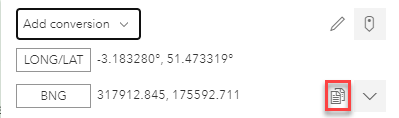
If you click on the tool the map coordinates switch from Live to Capture mode, this lets you click on the map to capture the coordinates at the point you click your mouse and then you can use the Copy tool (outlined in red in the image above) to copy the current coordinates. |